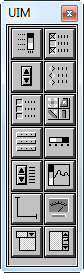
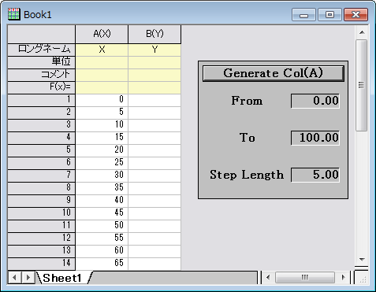
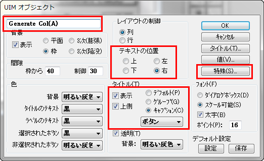
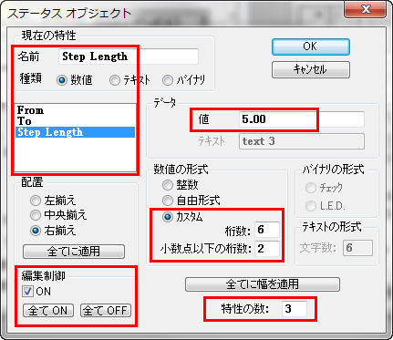

FAQ-689 ユーザインターフェースモジュール(UIM)とは何ですか？UIMオブジェクトの編集、プログラムの方法は？
UIM-editing-programming
最終更新日: 2019/1/3
 | 重要なお知らせ！！！
UIMは非常に古いツールで、Originはカスタムダイアログを構築してルーチンを完成させるための、より強力で柔軟なツールを備えています。Origin 2018bからは、UIMツールボックスはデフォルトで編集モードで隠されています。現在のバージョンでは、
もし引き続きUIMを使用したい場合は、システム変数@UIMを1に設定してUIMツールボックスを編集モードにし、このページの使用方法を続行できます。
- Originメニューから環境設定：システム変数を選択します。
- システム変数を設定ダイアログで、変数欄に@UIM、値欄に1と入力します。
|
概要
ユーザインターフェースモジュール(UIM)は、カスタムツールを開発するために使用できるオブジェクトのセットから構成されます。14個のオブジェクトは、通常ウィンドウテンプレートに追加され、LabTalkスクリプトを実行ためにプログラムできます。様々なオブジェクトのタイプ(ビットマップボタン、チェックボックスコントロール、ラジオボタンなど)を修正、プログラムでき、カスタムルーチンの直感的なインターフェースを作成できます。
UIMはOriginProのみの機能でした。Origin 2015 SR1以降、通常版でも使用できます。www.originlab.comで、UIMのドキュメントをPDF形式でダウンロードできます。
- 
- アプリケーションテンプレートとしてし使用したいOriginのウィンドウ(ワークブック、行列ブック、グラフ、レイアウト)を開きます。
- メニューから編集：編集モードを選択します(編集モードの横にチェックがある場合は編集モードです)。
- UIMツールバー内の、使用したいボタンをクリックします。
- オブジェクトを追加したい場所に、マウスでドラッグし四角形を作成します。するとUIMオブジェクトが追加されます。
- ボタン編集モードでは、オブジェクトを選択し、必要に応じて移動やサイズ変更ができます。
- 編集モードで、オブジェクト上で右クリックして、プログラム制御を選択します。
- オブジェクト名を編集し、OKボタンをクリックしてダイアログを閉じます。
- UIMオブジェクトダイアログを使用してコントロール、レイアウト、背景を編集します。タイトル、値、特殊ボタンをクリックしてさらなるオプションも利用できます。これらのボタンの種類はUIMオブジェクトタイプによって異なります。
- UIMオブジェクトダイアログを開くには、編集モードでオブジェクトをダブルクリックします。編集モードでない場合、Ctrlキーを押しながらオブジェクトをダブルクリックします。
- オブジェクトのプログラム制御ダイアログを使用して、オブジェクトで実行するスクリプトを追加できます。
- オブジェクトのプログラム制御 ダイアログを開くには、編集モードで、オブジェクト上で右クリックして、プログラム制御を選択します。編集モードでない場合、Altキーを押しながらオブジェクトをダブルクリックします。
- スクリプトでUIMオブジェクトにアクセスするには、ObjectName.ControlName表記を使用します。Control Nameにスペースを含む場合、コード内でコントロールを呼ぶには、取り除く必要があります。
| Note:現在のUIMオブジェクト自身のコントロールにアクセスするとき、this.ControlName を使用します。
|
サンプル
このサンプルでは、From, To, Step Lengthの値をユーザが入力し、Generate Col(A) ボタンをクリックすると、LabTalkスクリプトが実行され列Aにデータを生成するシンプルなUIMオブジェクトを作成します。
- 
- メニューから、編集：編集モードを選択します。UIMツールバーが表示されます。
- Statusボタンをクリックします。
- ワークブック内の適当な場所でドラッグして矩形を作成します。STATUSとラベル付けされたオブジェクトがワークブックウィンドウに追加されます。
- オブジェクトをダブルクリックし、UIMオブジェクトダイアログボックスを開きます。
- 下図のように設定します。
- 
- 特殊ボタンをクリックし、ステータスオブジェクトダイアログボックスを開きます。
- 下図のように設定します。Fromの値は0.00、Toの値は100.00、Step Lengthの値は5.00にします。
- 
- OKボタンを2回クリックしてステータスオブジェクトダイアログとUIMオブジェクトダイアログを閉じます。
- STATUSオブジェクトを右クリックして、プログラム制御を選びます。
- スクリプトボックスに、次のように入力します。
-
col(A) = data(this.From, this.To, this.StepLength);
- ～の後でスクリプトを実行リストから、ボタンアップを選びます。
- OK をクリックしてダイアログを閉じます。
- メニューから、編集：編集モードを選択してボタン編集モードを終了します。
- Generate Col(A) ボタンをクリックすると、列Aにデータが生成されます。
キーワード:UIM, ユーザインターフェースモジュール, カスタムルーチン, カスタムツール, カスタムアプリケーション, GUI, LabTalk